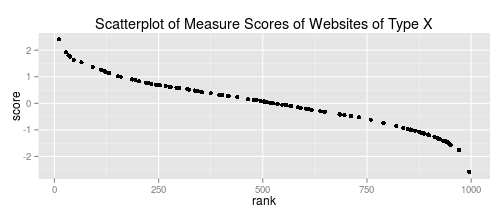
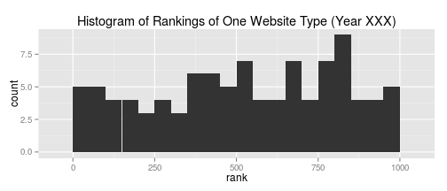

Popular Websites in Global Attention Economy
As more and more people get online, how has the status of different types of websites changed in the attention economy?
Find the App here!
As more and more people get online, how has the status of different types of websites changed in the attention economy?
Find the App here!
Diversity of Userbase: Internet users come from all over the world. Some websites' users frequent a wider range of other websites than others. For example, The userbase of e-map service is a far more diverse than that of an online dissertation repository.
Centrality in User Attention: Some websites are more central in the attention economy than others because whatever other sites different users also visit online, a large amount of users tend to use these websites. For example, Google is high on Centrality score as people of various online browing habits tend to use Google habitually.
This tab produces a scatter plot is based on the scores (of your chosen measure) of the 1000 most popular websites of a given year. The scores are ranked from high to low. You could view only websites belonging to certain basic categories. Sample code:
require(ggplot2) ## this is NOT the real dataset being used in the app
score <-rnorm(1000); score <- score[order(-score)] # randomly generate website scores
dat <- data.frame(cbind(score, rank=1:1000));
dat_onecat <- dat[sample(1:1000,100,replace=F),] #generate data of one website type
ggplot(dat_onecat,aes(x=rank, y=score)) +
geom_point(size=2) +
ggtitle(paste("Scatterplot of Measure Scores of Websites of Type X"))

This tab generates histograms based on the rankings of scores (of a given measure) of the 1000 most popular websites of a given year. The distribution of rankings of a particular website category informs us of the internal diversity of this category. Sample code:
require(ggplot2) ## this is NOT the real dataset being used in the app
score <-rnorm(1000); score <- score[order(-score)] # randomly generate website scores
dat <- data.frame(cbind(score, rank=1:1000));
dat_onecat <- dat[sample(1:1000,100,replace=F),] #generate data of one website type
ggplot(dat_onecat, aes(x=rank)) +
geom_histogram(binwidth = 50) +
ggtitle(paste("Histogram of Rankings of One Website Type (Year XXX)"))

This tab gives a simple line plot based on the average rankings (of a given measure) of different website types over time. Due to how these measures are calculated, when we want to have a comparative view, it is more useful to examine their rankings rather than their absolute values.
We need to be careful, though, to rely on the averages to discern how the status of different types of websites changed in the attention economy, because each category can be internally heterogeneous (see the 'Ranking Distribution' tab).
(No sample code is presented for this tab.)